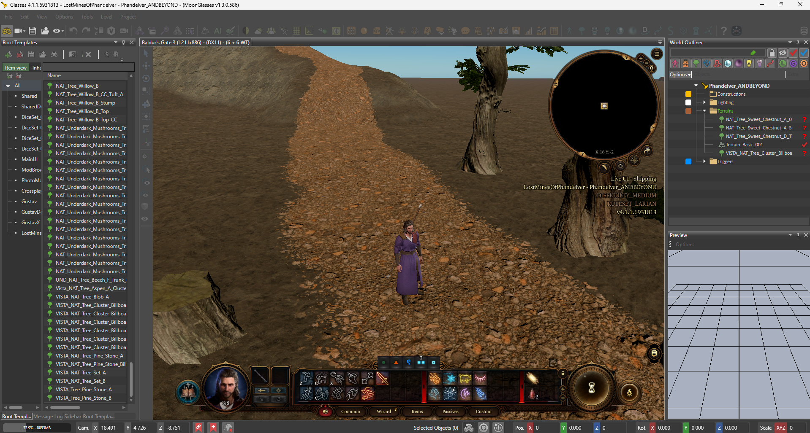
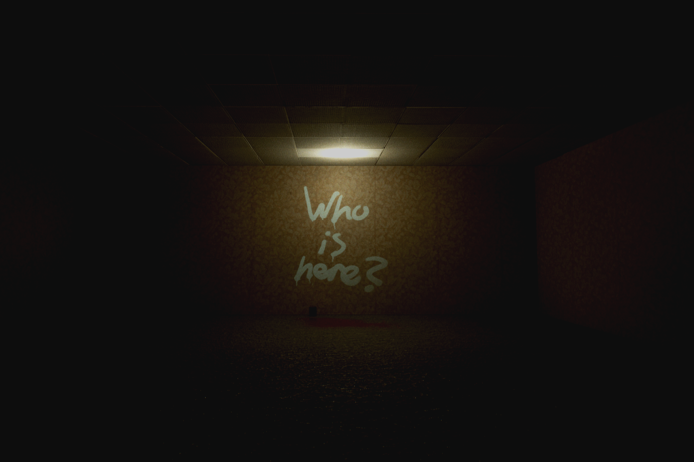
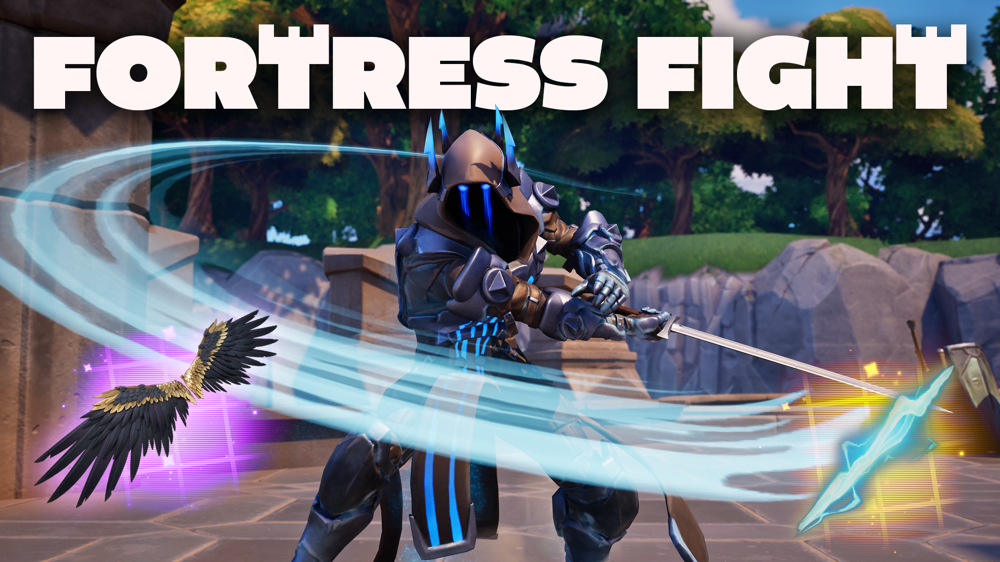
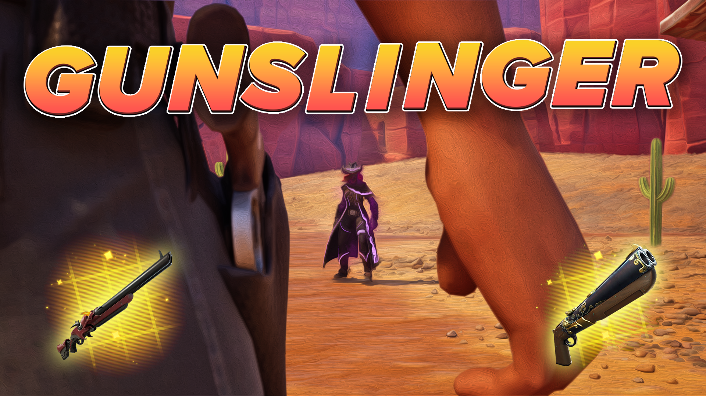

Projects
Lost Mines of Phandelver
Lost Mines of Phandelver is actually a mod to Baldur’s Gate 3. This is a retelling of the Dungeons and Dragons campaign. It is my current project I am working on telling the story of a group of travellers that must face off against a slumbering dragon to help out a group of dwarves find their home. This re-tell takes twists and turns not found in the original book, that creates unique and fresh experiences for old and new players. A lot of the elements of this game are also inspired by my favorite book The Hobbit by J. R. R. Tolkien. After completing Familiar Unknowns, I found that I really enjoyed making story based games. One of my favorites is Baldur’s Gate 3, which has one of the most complex story telling in any game I have ever played. The unique challenge that I am finding trying to make this game is the amount of detail required for my story to work since it is a choose-your-own adventure story.

Familiar Unknown
Set in the Backrooms genre, Familiar Unknown is a game I made about a detective unraveling a plot against the town he is trying to protect. It’s a linear story based horror game based on the famous Backrooms lore with my own twist. This game explores the complexities of the backrooms while telling a story about a detective who is surrounded by enemies from within. He finds out that the monsters in this place aren’t the only adversaries. This project was my first big project that I decided to challenge myself with. It also was my first story that I had written. All my other games had either no story or very little storytelling, so this project really took a lot to get right and create something I am proud to show off .

Gunslinger & Fortress Fight
Gunslinger and Fortress Fight are both Fortnite creator games that are inspired by modern team-based shooters and slashers. Each game has their own unique set of weapons and abilities to allow players to wreck havoc and cause chaos on the battlefield. Gunslinger is a western shooter and Fortress Fight is a medieval fantasy sword game. Fight for capture points or eliminate the other team to win the match. These two games were my first Unreal Engine projects. They both are team based games with similar elements. I was very new to the process of making games and depended on tutorial after tutorial in order to make these games. It took a lot of effort trying to learn Unreal Engine as this was a platform I had never worked on.


| Project | Genre | Engine | Status |
|---|---|---|---|
| Lost Mines of Phandelver | Adventure/RPG | Modded BG3 | Writing & design |
| Familiar Unknown | Horror | Unreal Engine 5 | Completed |
| Gunslinger | Team Shooter | UEFN | Completed |
| Fortress Fight | Team fighter | UEFN | Completed |